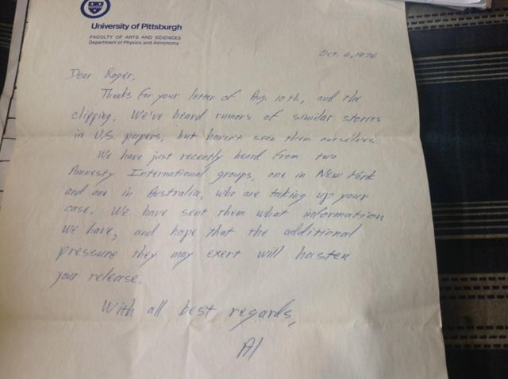
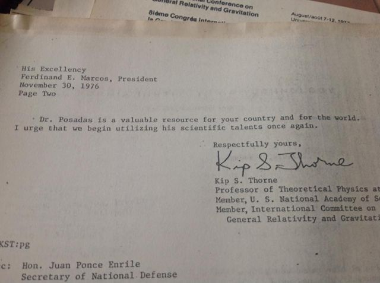
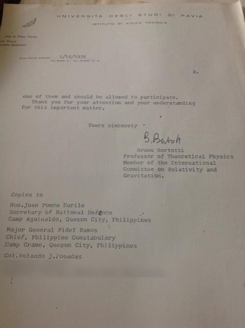
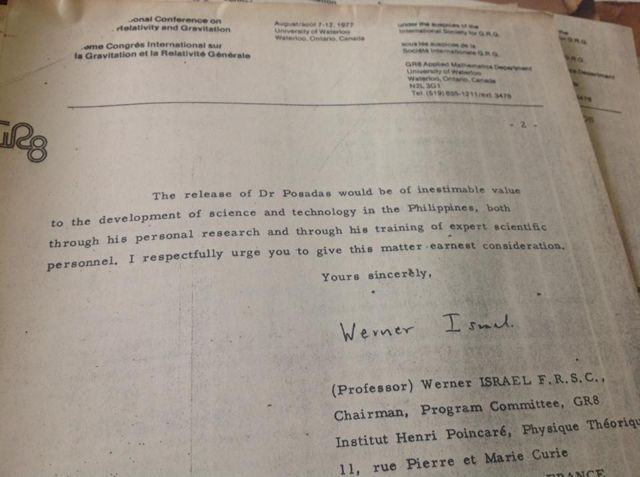
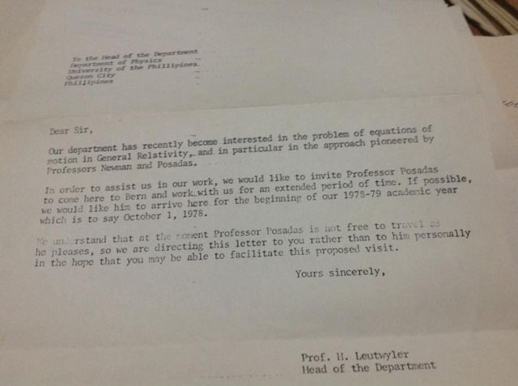
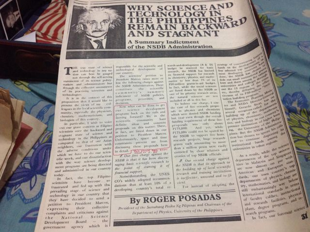
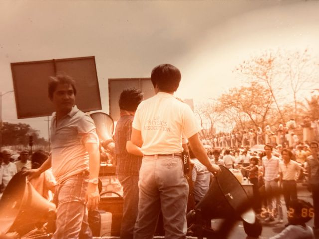
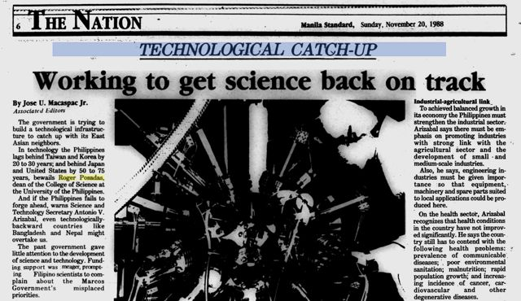
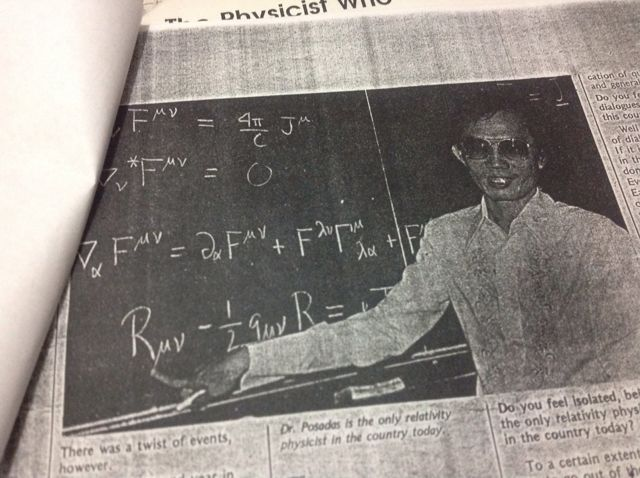

Tatay
Dr. Roger D. Posadas · pisiko, guro, tagapagtatag ng mga institusyon
Isang pahina para sa aking ama. Propesyonal na website ito, at siya ang dahilan kung bakit ako may propesyon.
Bakit may pahinang ito
Pisiko at guro ang aking ama. Naniwala siyang dapat maglingkod sa tao ang agham at na naitatayo ng isang bansa ang sarili nito sa pamamagitan ng mga taong marunong magtayo. Ikinulong siya dahil sa paniniwalang iyon, at ginugol niya ang natitira niyang buhay sa pagtatayo ng mga institusyong nagbibigay-daan sa mga Pilipinong siyentipiko na mag-aral at magtrabaho sa sariling bayan. Pumanaw siya noong Agosto 2017. Lahat ng ginawa ko mula noon, mula sa pagsapi sa militar upang makapag-aral ng inhinyeriya hanggang sa pagsisimula ng PhD tungkol sa kung paano nakararating ang tubig sa mga sambahayang Pilipino, ay nagmumula sa kaniya.
Sa pagsunod sa kaniyang mga yapak, pinili kong maging civil engineer upang matutuhan kung paano hubugin ang itinayong kapaligiran para sa kapakanan at kabutihan ng tao at ng kalikasan.

Ang kaniyang linya
- Cagayan de Oro · 1960Valedictorian ng Xavier University High School. Anak ng isang opisyal ng Hukbo, balak niyang sundan ang ama sa Philippine Military Academy.
- UP Diliman · 1960 hanggang 1964Pumasok sa Unibersidad ng Pilipinas bilang iskolar ng National Science Development Board. Ang teorya ng relativity ni Einstein, na nakilala niya sa ikatlong taon, ang tuluyang nagpabago sa kaniyang mga plano. B.S. Physics, 1964.
- Pittsburgh · 1965 hanggang 1970Iskolar ng Rockefeller Foundation sa University of Pittsburgh, na pinili niya dahil sa malakas nitong grupo sa relativity. Ph.D., 1970, sa disertasyon tungkol sa equations of motion at sa istruktura ng mga singularity sa general relativity, na nailathala sa Physical Review. Saka siya umuwi.
- UP Physics · 1970Pinuno ng departamento ng pisika sa edad na 26. Nang Setyembreng iyon, itinatag niya kasama ang siyam na iba pang siyentipiko ang Samahan ng Makabayang Siyentipiko, at siya ang naging pambansang tagapangulo.
- 1971 hanggang 1976Tinarget na arestuhin dahil sa kaniyang paninindigang pampulitika, nagtago siya noong 1971. Dinampot siya noong Enero 1976 at ikinulong nang walang pormal na kaso.
- 1976 hanggang 1978Sumulat kay Pangulong Marcos ang mga pisiko sa buong mundo, kabilang sina Kip Thorne, Roger Penrose, Dennis Sciama, Werner Israel at ang kaniyang mga guro sa Pittsburgh, upang hilingin ang kaniyang paglaya. Hinawakan ng Amnesty International ang kaniyang kaso. Noong Agosto 1978, nakalista pa rin siya sa Physics Today sa mga siyentipikong nakakulong.
- UP · dekada 1980Bumalik sa unibersidad bilang tagapangulo ng pisika, saka associate dean, saka unang dekano ng College of Science. Pinarangalan bilang Outstanding Young Scientist ng National Academy of Science and Technology noong 1984. Noong Pebrero 24, 1986, sumama ang mga pisiko ng UP sa mga tao sa People Power Revolution.
- UP Diliman · 1993 hanggang 1996Ikalimang Tsanselor ng UP Diliman. Binuo at sinimulan ang UP Science Complex.
- Technology management · dekada 1990 hanggang 2010Bumaling sa tanong kung paano humahabol ang mga bansa: technology management, patakarang pang-industriya, at ang maaaring matutuhan ng Pilipinas sa South Korea at Taiwan. Patuloy siyang sumulat hanggang sa kaniyang dekada setenta, kalaunan mula sa Research and Innovation Center ng Lyceum of the Philippines University sa Cavite.
- 2017Pumanaw noong Agosto 20, 2017, matapos ang mahigit limampung taon sa pagtuturo sa UP.
Bago ang pisika
Lumaki siyang nangangarap maging heneral. Noong bata, mga kampanya ni Napoleon ang binabasa niya, hindi mga magnet at baterya, at inaasahan niyang susundan ang kaniyang ama, isang koronel ng Hukbo, sa militar. Naunahan siya ng relativity.

Ikinulong dahil sa paninindigan
Naniwala siyang maaaring manatiling obhetibo ang isang siyentipiko nang hindi lumalayo sa isang lipunang nasa gitna ng pagbabago, at na dapat ilabas ang agham mula sa laboratoryo patungo sa mga taong dapat nitong pinaglilingkuran. Sa ilalim ng batas militar, itinuring na krimen ang paniniwalang iyon. Tinarget na arestuhin noong 1971, nagtago siya. Noong Enero 1976, dinampot siya at ikinulong sa Bicutan nang walang pormal na kaso. Nang Agostong iyon, iniharap siya ng pamahalaan sa press kasama ang iba pang detenido bilang isang lider ng kilusang komunista.
Tumugon ang mundo ng agham. Dumating kay Pangulong Marcos ang mga liham mula sa Oxford, Brussels, Pavia, Bern, Caltech, Waterloo at Pittsburgh, at inilarawan siya ng ilan bilang nag-iisang dalubhasa sa general relativity ni Einstein sa bansa at hiniling na ibalik sa bayan ang kaniyang talino. Iniulat ng mga grupo ng simbahan at ng mga siyentipikong sumulat para sa kaniya na pinahirapan siya habang nakakulong. Hinawakan ng mga grupo ng Amnesty International sa New York at Australia ang kaniyang kaso, at dalawang taon matapos siyang arestuhin, hinihiling pa rin ng Physics Today sa mga mambabasa nito na sumulat sa Malacañang para sa kaniya. Hanggang ngayon, binabanggit ang kaniyang pagkakakulong sa Science in the Service of Human Rights ni Richard Pierre Claude bilang halimbawa ng mga siyentipikong inusig dahil sa pagpuna sa isang diktadura.
Nakalaya siya at bumalik sa pagtatrabaho sa parehong unibersidad.

Pacific Stars and Stripes, Hulyo 16, 1976: nananawagan ang mga siyentipiko sa ibang bansa para sa kaniyang paglaya. 
The Times Journal, Agosto 28, 1976: iniharap siya ng pamahalaan sa press kasama ang iba pang detenido. 
Mula kay Allen Janis sa Pittsburgh, Oktubre 1976: hinawakan ng Amnesty International ang kaniyang kaso. 
Mula kay Kip Thorne kay Pangulong Marcos, Nobyembre 30, 1976. 
Mula kay Bruno Bertotti sa Pavia, Disyembre 1976, may kopya para sa kalihim ng tanggulan at sa kaniyang ama, si Col. Rolando J. Posadas. Pinalabo ang address. 
Mula kay Werner Israel, tagapangulo ng program committee ng GR8, 1977. 
Mula kay Heinrich Leutwyler sa Bern, 1978: paanyayang magtrabaho roon, ipinadala sa kaniyang departamento dahil hindi siya malayang makapaglakbay.


Bubukas nang buong laki ang bawat dokumento. Mula ang mga ito sa mga papeles ng aming pamilya. Nasa Ingles ang mga dokumento.
Ang kaniyang itinayo
Buong karera niya ay ginugol niya sa Unibersidad ng Pilipinas, at karamihan sa itinayo niya roon ay nakatayo pa rin. Noong 1982, nawala sa departamento ng pisika ang halos lahat ng mga Ph.D. nito dahil sa mga trabaho at grant sa ibang bansa. Muli niya itong itinayo sa pamamagitan ng pagbibigay sa mga estudyante ng dahilan upang manatili: programang doktorado sa sariling bayan, mga advanced na kurso sa laser at semiconductor, at mga laboratoryong kayang gumawa ng tunay na eksperimento. Ang departamentong iyon ang naging National Institute of Physics, isang pambansang sentro ng kahusayan.
Bilang dekano, tumulong siya sa pagtatatag ng Center for Environmental Research, Education and Services, ng Archaeological Studies Program, at ng Materials Science and Engineering Center. Tumulong siya sa pagtatatag ng KSP, isang pambansang samahan ng mga aktibong siyentipiko, noong 1981 at nahalal bilang unang pangalawang pangulo nito. Kalaunan, pinangasiwaan niya ang isang proyekto ng Technology Management Center na may suporta mula sa Canada. Sa buong panahong iyon, hayagan at tahasan siyang sumulat tungkol sa pagpopondo ng pamahalaan sa agham, at hindi siya tumigil sa paninindigang kasinghusay ng sinuman ang mga Pilipino sa pagkadalubhasa rito.
Simple ang kaniyang paninindigan. Naniwala siyang dapat sanayin ng Pilipinas ang sarili nitong mga siyentipiko sa loob ng bansa, panatilihin sila, at ilagay sila sa paglutas ng mga suliranin ng bayan. Sa ibang bansa niya nakuha ang kaniyang doktorado, at limampung taon niyang ginawang posible na hindi na kailanganin iyon ng iba.
Ilang taon niyang itinatama ang mga reporter na tumatawag sa kaniyang nuclear physicist; relativity ang kaniyang larangan. Naaalala rin ng kaniyang mga kasamahan na kasingseryoso niya ang pagkanta gaya ng kaniyang pagseseryoso sa UP.

Magasing NOW, 1971: profile ng batang pinuno ng departamento at ng samahan ng mga siyentipikong itinatag niya. 
Ang kaniyang pampublikong sakdal laban sa National Science Development Board, bilang tagapangulo ng UP Physics at pangulo ng Samahang Pisika ng Pilipinas. 
Panayam noong 1982, sa edad na 37, bilang associate dean para sa natural sciences at matematika. 
National Academy of Science and Technology, Outstanding Young Scientist, Disyembre 1984. 
Sunday Globe Magazine, Agosto 7, 1988: ang pisikong nais sanang maging heneral. 
Mga pisiko ng UP sa People Power Revolution, Pebrero 24, 1986. 
Manila Standard, Nobyembre 20, 1988: bilang dekano ng College of Science, tungkol sa pagbabalik sa tamang landas ng agham sa Pilipinas. 
Sa pisara, kasama ang mga field equation nina Maxwell at Einstein.


Ang kaniyang mga papel
Isang seleksiyon. Naka-host dito bilang PDF ang mga open-access na papel; naka-link sa publisher ang iba. Nasa Ingles ang mga papel.
- 1969DOI
- 1982PDF
- 1999DOI
- 2006PDF
- 2009PDF, first page
- 2015PDF
- 2015PDF
- 2015PDF
Si Tatay at ako


Ang dala ko
Hindi ako naging pisiko. Naging inhinyero ako, dahil nais kong gawin ang bahagi ng kaniyang pangarap na pinakadiretsong dumadampi sa tao: ang mga tubo, ang mga planta, at ang mga institusyong nagpapasya kung may tubig ang gripo ng isang pamilya. Ang mga tanong ko sa aking pananaliksik, tungkol sa kung bakit binibigo ng mga sistemang maayos sa papel ang mga taong umaasa rito, ay ang mga tanong din niya tungkol sa agham sa Pilipinas. Umaasa akong maiuwi ang gawaing ito, gaya ng ginawa niya.
Salamat, Tatay.
Basahin pa ang tungkol sa kaniya
Gayundin: Richard Pierre Claude, Science in the Service of Human Rights (University of Pennsylvania Press, 2002), kabanata tungkol sa aktibismo para sa kalayaang pang-agham.